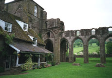
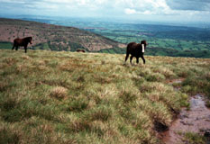
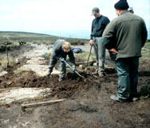

We walked around the abbey some before breakfast, since they didn't serve it till 8:30. We had even more food than usual for breakfast, since they had vegetarian sausages (in addition to the usual orange juice, coffee, eggs, tomatoes, mushrooms, fried potatoes, and toast and marmalade.) After breakfast we went back to the room to lie down for a few minutes and digest! But then by the time we were ready to leave, it was raining and the skies were totally grey, so we decided to put on all our rain gear, for the first time. We sat on the bench on the front porch of our abbey lodge and pulled on our waterproof over-trousers and our gaiters. Then rain jackets and backpacks, and we set off. Our first job was to get back up the thousand plus feet to the top of the Hatterall Ridge. The views back down into the valley, which we stopped many times to admire, were lovely. Llanthony Abbey got smaller and smaller. The sun occasionally broke through, and we would watch the bright area as it moved across the valley. When the path began to level out, we looked up toward the ridge top and in the distance saw a familiar pair of jackets, one red and one blue. They waved to us, so it was indeed Fred and Theo, as we had thought. We climbed the final bit up to them -- they had stopped for a water break -- and caught up on news. They went on ahead, and we passed them (as they ate or rested) or they passed us (as we ate or rested) quite a few times that day.
We enjoyed the ridge walk. The path here is actually the boundary between Wales and England. The rain let up and we stripped off our rain gear. There are about 11 miles of the path on Hatterall Ridge. Beside us was a mixture of heather, bilberry, scrub grass, and peat. Skylarks sang and fluttered above us. There were occasional ponies grazing. They belong to trekking outfits and they wander freely up here. After awhile the path became more and more squishy, often just black peat puddles. We had to hunt for places to walk, not to sink in watery marshes. We came across a group of men working on path repair. They were putting in flagstones across the worst bogs -- virtual lakes, sometimes. We asked, and they said that the flagstones weigh up to about half a ton each. We've seen this sort of erosion control in other places, like the North York moors. Since we were close to the northern end of the ridge, we asked them which route to use for going down. Our books had said that the official route goes to the east, but the preferable path, which almost everyone uses, is to the west. But the men said definitely to take the official route, because they had just paved it for us! So we did what they said to do, and appreciated their work as we went down the hillside. After another hour or so we were in Hay on Wye.
| Previous Day | Next Day | Home Page |